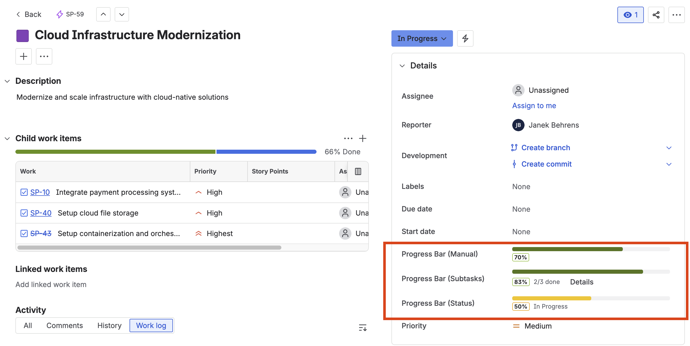

Visual Progress Tracker
for Jira
Color-coded progress bars on every Jira issue — automatically calculated from status, subtasks, or set manually.
Free for teams up to 10 users · Status & Subtask types update automatically · Runs on Atlassian
